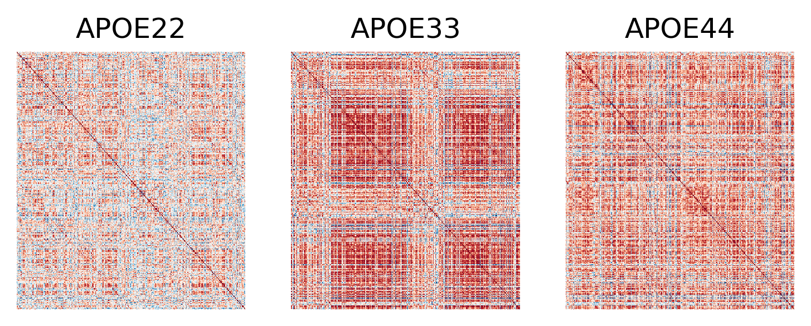

Exploratory analysis on volume correlations
Contents
Exploratory analysis on volume correlations#
import graspologic as gp
import hyppo
import matplotlib.pyplot as plt
import numpy as np
import pandas as pd
import seaborn as sns
from scipy.spatial.distance import squareform
from statsmodels.stats.multitest import multipletests
from pkg.data import (
GENOTYPES,
HEMISPHERES,
SUPER_STRUCTURES,
load_fa_corr,
load_vertex_metadata,
load_volume_corr,
)
Plot the datakruskal#
def set_theme(
theme=None,
spine_right=False,
spine_top=False,
spine_left=True,
spine_bottom=True,
axes_edgecolor="black",
tick_color="black",
axes_labelcolor="black",
text_color="black",
context="talk",
tick_size=0,
font_scale=1,
):
if theme is None:
rc_dict = {
"axes.spines.right": spine_right,
"axes.spines.top": spine_top,
"axes.spines.left": spine_left,
"axes.spines.bottom": spine_bottom,
"axes.edgecolor": axes_edgecolor,
"ytick.color": tick_color,
"xtick.color": tick_color,
"axes.labelcolor": axes_labelcolor,
"text.color": text_color,
"pdf.fonttype": 42,
"ps.fonttype": 42,
"font.family": "sans-serif",
"font.sans-serif": ["Arial"],
"xtick.major.size": tick_size,
"ytick.major.size": tick_size,
}
# Load the data
correlations, labels = load_volume_corr()
## Plot to make sure nothing is wrong
fig, ax = plt.subplots(1, 3, figsize=(6, 2), dpi=300)
for idx, label in enumerate(labels):
sns.heatmap(
correlations[idx],
ax=ax[idx],
vmin=-1,
vmax=1,
cbar=False,
cmap="RdBu_r",
xticklabels=False,
yticklabels=False,
center=0,
)
ax[idx].set(title=label)

Vectorize matrix and compute dcorr#
# ksample = hyppo.ksample.KSample("Dcorr")
# idx = np.triu_indices_from(correlations[0], k=1)
# ksample.test(*[c[idx].reshape(-1, 1) for c in correlations])
# use kruskal-wallis for speed
from scipy.stats import kruskal
idx = np.triu_indices_from(correlations[0], k=1)
kruskal(*[c[idx] for c in correlations])
KruskalResult(statistic=9669.864712617768, pvalue=0.0)